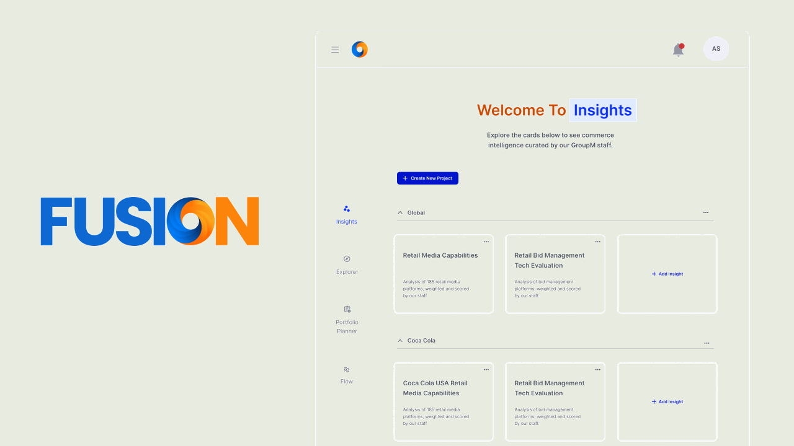
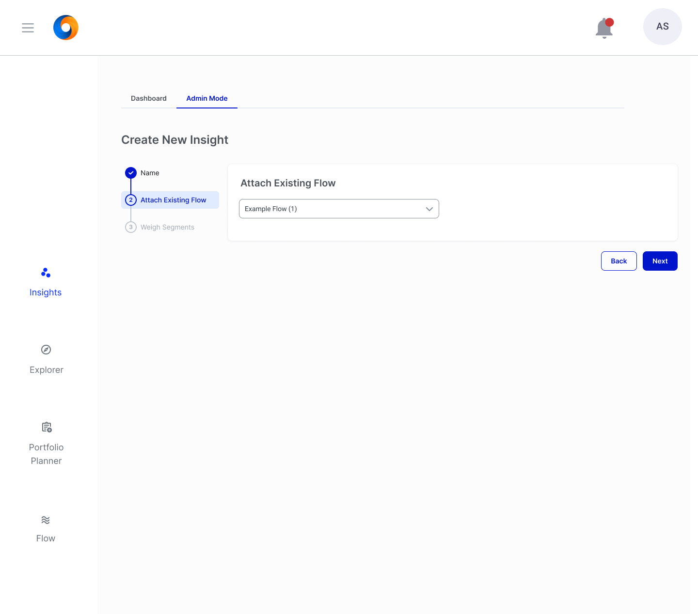
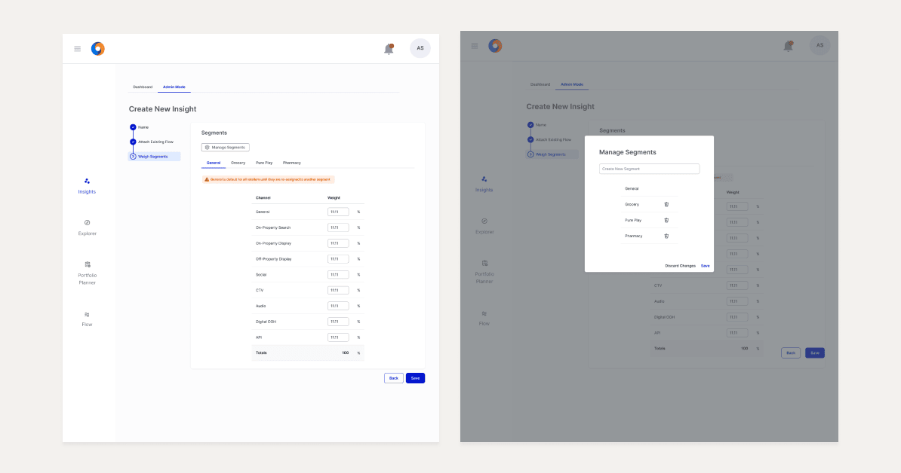
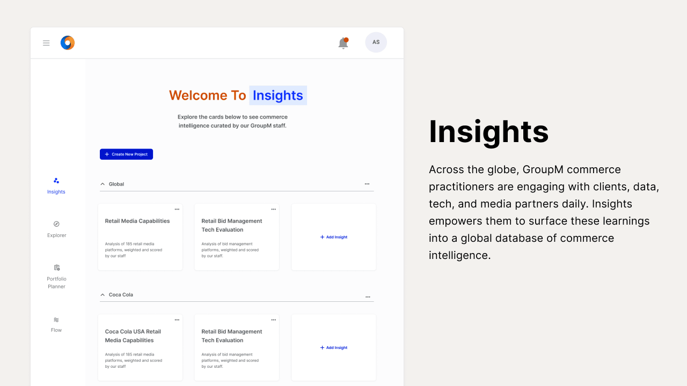
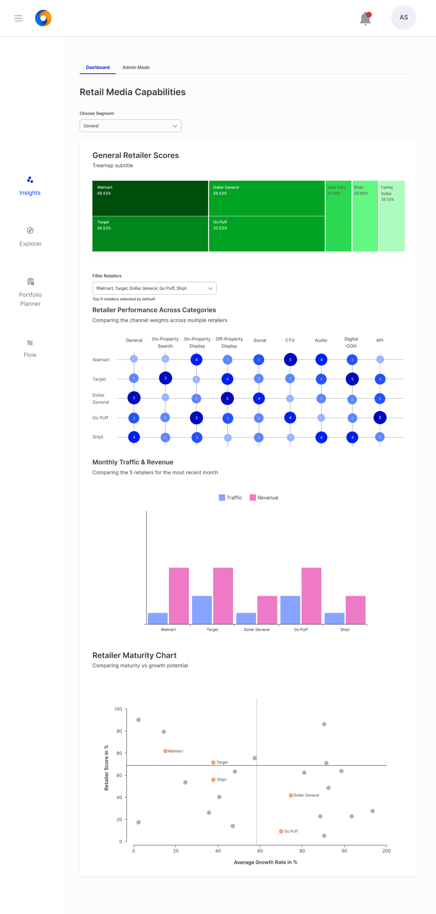
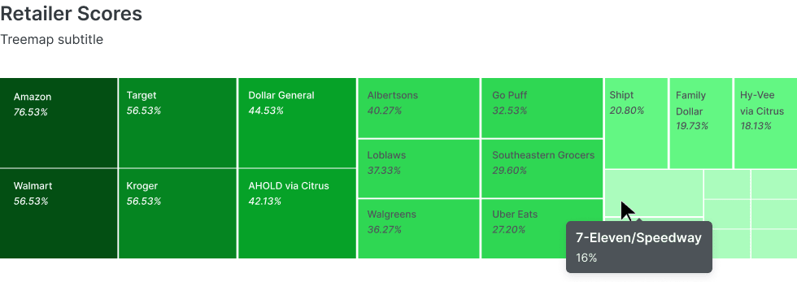
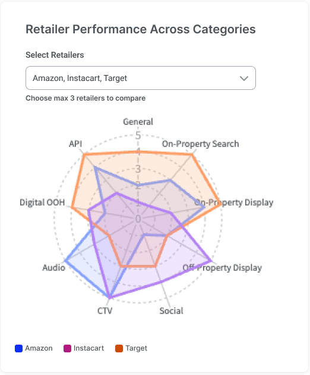
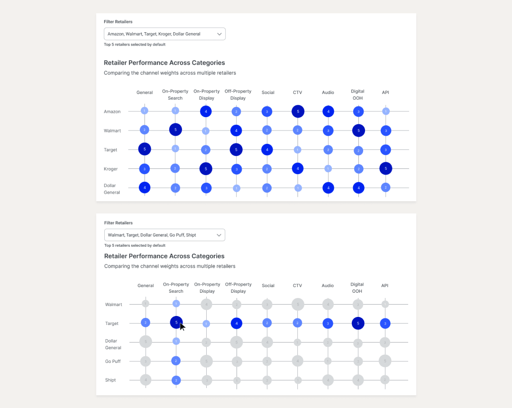
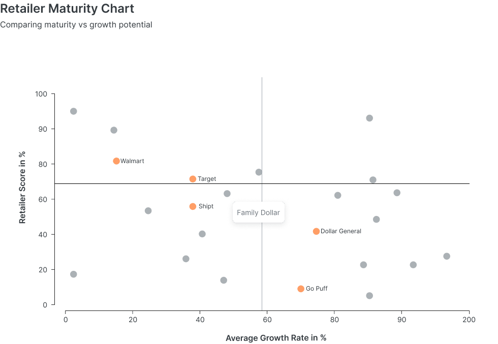

Fusion Insights
A commerce intelligence dashboard that replaced fragmented PowerPoint reports with interactive, real-time data visualization — giving Fortune 500 brands a single place to evaluate and compare their retail media partners.

Add hero — full dashboard screenshot (insights-hero.png)Gigabytes of retail data. Zero way to compare it.
GroupM's commerce team was at the center of a data problem. Every brand they worked with — Coca-Cola, Nestle, Unilever — was generating evaluation data through partner retailers across channels like CTV, search, display, social, and audio. That data arrived from multiple sources: Comscore, SimilarWeb, Criteo, CitrusAd, and more.
There was no single place it all lived. The commerce team used older software and PowerPoint to build visualizations — manually assembling charts for each client presentation, unable to compare metrics across brands or retailers in any consistent way.
The result: strategists spent hours on report assembly instead of analysis. Clients received static snapshots instead of live data. And there was no way to ask the most important question — how does Walmart compare to Kroger across all our commerce channels? — without building a new slide deck from scratch.
Insights was the answer: a dashboard that would consolidate all commerce data from a brand's Flow evaluation into a single, interactive view — with charts built for the specific analytical questions the commerce team needed to answer every day.
Sole designer on a project I'm most proud of
Insights was the project I pushed hardest for and learned the most from. I was the sole designer throughout — from the first stakeholder session through to user testing and engineering handoff. The project ran under real constraints: a tight timeline, a small team, and data visualization territory that was genuinely new to me.
I owned requirements gathering, charting library research, wireframing, hi-fi design, prototype testing via Maze, and cross-functional negotiation with engineers on chart feasibility. The fact that Insights ended up being demoed in client pitches for Unilever — and that the commerce team embraced it — made it the work I'm most proud of from my time at GroupM.
Understanding the data before designing the charts
Before sketching a single screen, I needed to understand three things: what data the commerce team was working with, what questions they were trying to answer, and what our charting library could actually support.
Requirements from the commerce team
I ran working sessions with key stakeholders from the commerce team and engineers together. Two requirements shaped everything: retailers needed to be segmented into fair comparison groups (pharmacy vs. grocery vs. general), and the dashboard needed charts that could surface both overall performance and channel-level detail.
Understanding the metrics
I worked with the commerce team to map every data metric that Flow would pipe into Insights: overall retailer scores, per-channel weights (General, On-Property Search, On-Property Display, Off-Property Display, Social, CTV, Audio, Digital OOH, API), monthly traffic, revenue, and growth rate. The chart types had to follow from the data, not the other way around.
Confirming what engineering could build
I aligned with engineers early on the charting library — Nivo Rocks — because our design system didn't include all the chart types we needed. Knowing the library's constraints and capabilities before wireframing meant I wasn't designing charts that would be impossible to implement. Several chart decisions later depended on this foundation.
Flow feeds Insights — the two platforms work in tandem
Insights didn't exist in isolation. The data that powered every chart came from Flow — specifically from completed RFI evaluations that had been scored, approved, and published by the commerce team. This meant every Insight was grounded in real retailer response data, not manually entered figures.
Setting up a new Insight was a three-step process in Admin Mode:

Add screenshot — Create New Insight, Attach Existing Flow step
Add screenshot — Create New Insight, Weigh Segments step with Manage Segments modalThe Weigh Segments step is where the commerce team had real control. Different retailer segments — General, Grocery, Pharmacy, Pure Pay — could have different channel weightings, reflecting the fact that a grocery retailer and a pharmacy retailer shouldn't be scored identically across all nine channels. This made the resulting scores more meaningful and client-defensible.
One hub, every brand's evaluations
The Insights homepage gave the commerce team a single place to manage all active evaluations across clients. Projects were organized by brand — Global, Coca-Cola, Nestle — with individual Insight cards showing the evaluation name and scope.

Add screenshot — Insights homepage (Welcome To Insights, Global + Coca-Cola + Nestle project groups)Each project had its own access control — admins could manage who had edit access on a per-project basis, keeping Coca-Cola data siloed from Nestle without any manual gatekeeping. This was a direct carry-over from Flow's permissions model and meant the commerce team could confidently share dashboards with brand stakeholders without risking cross-client data exposure.
Four charts. Four analytical questions. One page.
The Insights dashboard was built around a specific insight about how the commerce team worked: they didn't have one question about their retailers — they had four. Which retailers are performing best overall? How do specific retailers compare across channels? How does traffic and revenue track month over month? And where do retailers sit on a maturity vs. growth curve?
Each chart on the dashboard was designed to answer exactly one of those questions — and nothing else.

Add screenshot — Full dashboard view (all four charts visible)Which retailers are performing best — at a glance, at scale
The treemap answered the first and most fundamental question: across all partner retailers, who's at the top and who's at the bottom? Each retailer is a tile sized by their overall score, colored on a dark-to-light green scale from highest to lowest performer.

Add screenshot — Treemap (Retailer Scores, full view showing Amazon vs. 7-Eleven/Speedway size contrast)This chart almost didn't ship. During hi-fi design, the engineers pushed back — they were concerned that retailers with very low scores would be rendered nearly invisible, creating a misleading picture of the competitive landscape. It was a valid concern, and one I took seriously.
Rather than accepting that framing or abandoning the treemap, I went back to the Nivo Rocks charting library and consulted a UX colleague who worked on Copilot — GroupM's adjacent AI platform. After working through the alternatives together, we both reached the same conclusion: no other chart type communicated ranked distribution across 15+ retailers as clearly as a treemap. The invisibility of low scorers was actually accurate — those retailers genuinely had a smaller footprint in the data. The chart was being honest.
I brought that rationale back to the engineers with the research behind it. They agreed. The treemap shipped.
Comparing retailers across nine channels — side by side
The treemap showed overall performance. But the commerce team's next question was always more nuanced: how does Amazon compare to Target across specific channels? A retailer that's strong in CTV but weak in On-Property Search tells a very different story than their overall score suggests.
A radar chart was the right tool: nine axes (one per commerce channel), each retailer plotted as a filled polygon. Commerce strategists could select up to three retailers at once and immediately see where their shapes overlap, diverge, and cross.

Add screenshot — Radar chart (Amazon, Instacart, Target across nine channels)The max-3 constraint was intentional. Four or five overlapping polygons on a radar chart become unreadable — the shapes obscure each other and the insight collapses. Three was the upper limit where the chart still communicated clearly. But that constraint created a problem that user testing would surface.
What user testing revealed — and how it changed the chart
During prototype testing with the commerce team via Maze, a consistent piece of feedback emerged: three retailers wasn't enough. Strategists regularly needed to compare five or more retailers simultaneously — running a full competitive set, not just a head-to-head.
A radar chart with five retailers was unworkable. The polygons overlapped completely and became impossible to distinguish. So I went back to research and came across a bubble heatmap — a grid where retailers are rows, channels are columns, and each cell is a bubble sized and colored by score intensity.
Strong for up to 3 retailers. User testing revealed the commerce team regularly needed to compare 5 or more at once — where the chart became unreadable.

Handles 5 retailers across 9 channels without visual noise. Bubble size and color encode score at a glance. Hover highlights an entire row and column while greying others.
✓ Commerce team loved itThe heatmap solved the comparison problem at scale. Each bubble's size and color intensity encodes the retailer's score for that channel — bigger and darker means stronger performance. The hover interaction was a key detail: hovering any bubble highlights the entire row (retailer) and column (channel) while greying everything else, letting the user focus on one intersection without losing the surrounding context.
The commerce team's reaction when they saw it in testing was immediate. It was both more useful and more visually appealing than the radar chart it replaced — a rare case where the user-driven pivot was better on every dimension.
Maturity vs. growth potential — a strategic lens
The fourth chart answered a fundamentally different question than the other three. Rather than evaluating current performance, it asked: where should a brand invest next?
The Retailer Maturity Chart is a scatter plot mapping two axes — Retailer Score (current commerce maturity) on the Y-axis and Average Growth Rate on the X-axis. Retailers fall into four quadrants that tell a clear strategic story: high score + high growth are priority partners; high growth + lower score are emerging opportunities worth watching; high score + low growth are established but potentially plateauing; low on both axes are deprioritized.

Add screenshot — Retailer Maturity Chart scatter plot (dark background, orange highlighted retailers)The selected retailers from a brand's evaluation are highlighted in orange — so a Coca-Cola commerce strategist could immediately see where their partners fall relative to the full market. Hovering any dot reveals the retailer's name and exact coordinates. The quadrant lines are set at the median, so the clustering is always relative to the current dataset rather than a fixed benchmark.
This chart was the one that ended up front and center in client pitches. It translated raw scores into business strategy in a way that a chart showing raw numbers couldn't — and it gave the commerce team a visual they could drop directly into a client conversation.
Maze prototype testing with the commerce team
Testing was conducted with the commerce team — the primary users of the platform — using Maze. Sessions covered the full admin flow (creating an Insight, attaching a Flow, configuring segments and weights) as well as the dashboard experience (reading and interacting with each chart).
The radar-to-heatmap pivot was the most significant thing testing surfaced, but it wasn't the only one. Testing also validated the segment weighting screen — specifically that commerce strategists needed the ability to create and name their own segments (General, Grocery, Pharmacy, Pure Pay) rather than working with a fixed taxonomy. The Manage Segments modal was a direct result of that feedback, allowing admins to add, rename, and delete segments without engineering involvement.
The decision to use Maze meant testing could happen asynchronously — useful for a commerce team spread across time zones. Prototype clicks, completion rates, and qualitative comments gave us a structured way to prioritize what to revisit before handoff.
From internal tool to client pitch asset
Insights was also the project that proved the value of the broader Fusion platform. Flow collected the data. Insights made it meaningful. Together, they gave GroupM's commerce team something that hadn't existed before: a single source of truth for retail media partner evaluation, built on real responses from real retailers — not manually assembled spreadsheets.
What this project taught me
What I learned
Insights was where I learned that data visualization is a research discipline, not just a design one. Every chart decision started with a question — what is the user actually trying to understand? — and worked backward from there. Understanding the data before touching a frame saved enormous time and avoided charts that looked good but answered the wrong question.
I also learned what it means to advocate for a design decision under real pressure. The treemap pushback from engineering wasn't comfortable, but going back with research and a peer consultation rather than capitulating was the right call. The chart shipped, and it was the right chart. That experience gave me a framework I've used in every design conversation since: if you believe in a decision, do the work to defend it — don't just defer.
What I'd do with more time
I would have explored AI-assisted summaries on the dashboard — natural language callouts like "Walmart leads across 6 of 9 channels, but lags in CTV" sitting above each chart. We had early discovery conversations about using LLMs to improve the platform's insight generation, and Insights was the obvious place to start. With more runway, that would have been a meaningful upgrade.
I would also have invested in a mobile-responsive version of the dashboard. The commerce team frequently presented from laptops in client meetings, and the dashboard wasn't optimized for those contexts. A presentation mode — full-screen, no UI chrome, chart-first — would have made it an even stronger pitch asset than it already was.